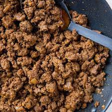

Taco meat

Description
Delicious fried ground beef you can use for taco, burrito or spaghetti!
Ingredients
- 500g of raw ground beef
- Salt
- Pepper
- Oil (preferably lard, tallow or olive oil)
Steps
- Heat up the pan
- Add oil of your choice and let it get hot
- Place meat on the pan
- After around 1 minute, break up the meat into 4 parts
- Continue frying and breaking up the meat gradually
- Once meat is broken up into relatively small pieces, add salt and pepper
- Continue fryying until brown